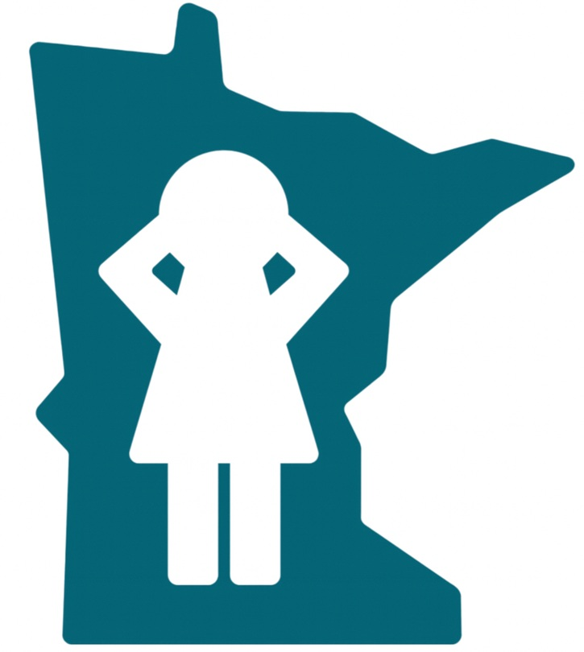

MCM is a Minnesota organization and says so visually: the hand-drawn state outline with a child silhouette is the only illustrative element in the brand. Use it as-is; do not re-trace or restyle it.